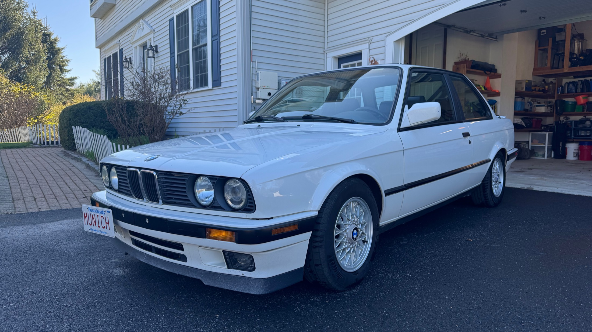

Air conditioning blows, but not cold
Fan operates; no cold air. Most likely wants a conversion to modern refrigerant.
№ 325is Modelljahr 1990 · Typ E30
BMW 325is — Alpine White over Black Leather.
Five-speed manual. Preserved, not modified.

01
Klaus came north from Virginia in 2018 — a Southern car with the one thing New England E30s almost never have: a clean, dry underside.
Within the first year of ownership roughly $10,000 in parts (and many more since then) went into him — sorting, refreshing, and future-proofing rather than chasing horsepower. The result is a car that is mechanically sound and genuinely turnkey. Cold mornings, long drives, errands on a clear day — he just works.
At 195,000 miles the M20 was treated to a full engine rebuild after the piston rings showed signs of blow-by. $5,500 in engine parts later, it is ready for another 195,000. Today the odometer reads 200,500, and the car is exactly what an E30 should be: light, honest, and analog - your oven timer has more computing power than this car.
The upgrades are deliberate — an E46 ZHP steering rack for quicker, more communicative steering and a better daily-driver feel, paired with a Z3 short shifter makes the car OEM+ and stupid fun on the twisty roads.
This car on a sunny 75º day with the windows down, sunroof open, and in third gear on your favorite twisty road is the best medicine for a bad day. I can guarantee you'll get out of the car with a smile on your face. It's motoring therapy.
The maintenance of this car is fully documented with a stack of receipts.
He is a clean, fair-weather daily and a proper driver’s car — not a project, not a canvas.
02
03
04
New main & rod bearings · new head gasket · all oil seals replaced · replaced the cylinder head (original had camshaft journal scoring) · rebuilt oil pump · pistons cleaned · new piston rings · new timing belt · so much more. Ready for another 195,000 miles.
Gearbox drained and refilled.
Timing belt, water pump, crankshaft seal, intermediate shaft seal, camshaft seal & o-ring all serviced. The camshaft seal & o-ring cured the oil leak on the front of the engine.
New plastic plug and o-ring in the LSD; speedometer restored.
Driveshaft, flex disc (guibo), center support bearing, output shaft seal and selector rod seal replaced.
All four brake calipers replaced · discs & rotors front and rear · master brake cylinder (replaced by Ultimate Bimmer Services).
Both hydraulic cylinders replaced.
Valve cover gasket, camshaft plugs, and valves adjusted to spec.
New thermostat fitted.
Alternator, power steering, and A/C compressor belts replaced.
Replaced; seat adjustments fully functional again.
Driver’s and passenger door lock mechanisms rebuilt.
Handbrake switch reconnected · solder reflowed for the 220 Ω resistor on the brake-lining bulb circuit.
Rear ski pass-through added.
Missing OEM handle replaced.
Worn original replaced with a new factory piece.
Closes the gap US cars left above the low beams; the nose reads as one continuous band.
Brighter with a sharper cutoff than the US sealed beams; the curved lower trim earns the nickname.
Knob and boot come as one factory unit rather than two separate pieces, so there is no seam or loose boot collar at the base.
Sets into the top of the knob: five-speed shift pattern with M Technic stripes.
Anthracite, with BMW lettering across the driver’s-side heel pad.
Fills the recessed rear plate area for a cleaner, uninterrupted tail.
350 mm, smaller than the factory wheel for quicker, more direct steering. Momo horn button swapped for a Renown BMW button.
Quicker steering ratio for a more nimble, modern daily-driver feel. Installed by Ultimate Bimmer Services, Nashua, NH.
Tighter, more precise throws; shift linkage rebuilt at the same time.
Super-aggressive: -2.2" front / -2.1" rear; far less body roll, corners flatter and faster.
Front and rear strut supports plus chassis X-brace for added rigidity.
Throaty outside, mild inside; 409 stainless cat-back with a CARB-legal direct-fit cat.
Period-correct 14-inch basket weaves sourced and refurbished; summer tires fitted.
Factory CM5908 radio refurbished by Cantaloupe Radio, with a Cantaloupe Bluetooth module installed.
05
Everything currently not working, plus the cosmetic imperfections worth noting.
Fan operates; no cold air. Most likely wants a conversion to modern refrigerant.
Does not currently function. Common, well-documented E30 fix.
Very, very little, and cosmetic only. Remarkable for a New England car, thanks to its Virginia origins.
The front passenger corner of the hood has a small area where the clear coat has come off. I bought the car like this and it has not gotten any worse under my ownership.